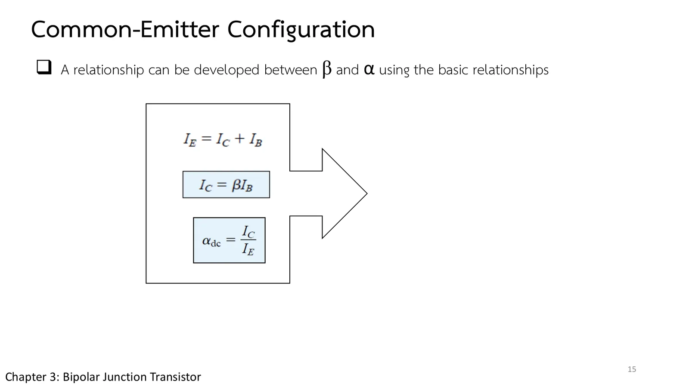

A microcontroller pin can supply only a little current, while a relay or a motor needs many times more. The answer is a transistor in the common-emitter configuration, the one met most often: a base current of microamperes controls a collector current of milliamperes, and the number that says how many times is beta (β). This page has a circuit whose \(V_{BB}\) and \(V_{CC}\) you can change, with its operating point on both sets of characteristics of Fig. 3.13 (section A), then reads the characteristics in Example 3.2, finds beta from the characteristics, and links alpha (α) to beta and the current \(I_{CEO}\) (problems 1–3), followed by more practice (chapter 3 slides, pp. 11–16; Boylestad section 3.5).
The common terminal: the emitter is the reference of both the input and the output. \(I_E = I_C + I_B\) and \(I_C = \alpha I_E\) still hold, as in common base (slide p. 11).
The active region: base–emitter junction forward-biased, collector–base junction reverse-biased; the curves are nearly straight and equally spaced, right of \(V_{CE\text{sat}}\) and above the \(I_B = 0\) curve. Left of \(V_{CE\text{sat}}\) is the saturation region (slide p. 12).
Beta: \(\beta_{dc} = I_C/I_B\) at the operating point (\(h_{FE}\) on data sheets) and \(\beta_{ac} = \Delta I_C/\Delta I_B\) at a fixed \(V_{CE}\) (\(h_{fe}\)); typically from about 50 to over 400, and the two are usually close enough to be used for each other (slides pp. 13–14).
α and β: \(\alpha = \beta/(\beta + 1)\), \(I_C = \beta I_B\), \(I_E = (\beta + 1)I_B\), and the leakage with the base open, \(I_{CEO} \cong \beta I_{CBO}\) (slide p. 15).
Biasing: draw \(I_E\) the way the arrow of the symbol points, add \(I_B\) and \(I_C\) by the current law \(I_C + I_B = I_E\), then put in supplies whose polarities drive those currents (slide p. 16).
ตอนที่ 1 · วงจรที่พบบ่อยที่สุด
Part 1 · The configuration met most often
อิมิตเตอร์ร่วม: กระแสเล็กคุมกระแสใหญ่
Common emitter: a small current controls a large one
Slide p. 11 moves the shared terminal to the emitter: the input is the base, the output the collector, and the emitter is the reference for both. In an npn transistor \(I_B\) and \(I_C\) flow in and \(I_E\) flows out at the emitter; a pnp reverses them all.
Slide p. 12 draws the output characteristics, \(I_C\) against \(V_{CE}\) for several values of \(I_B\). Look at the units: \(I_B\) is in microamperes (0–90 µA), \(I_C\) in milliamperes (0–8 mA), so a few tens of microamperes at the base control several milliamperes at the collector. The region used for amplifying is the active region, right of \(V_{CE\text{sat}}\) and above the \(I_B = 0\) curve; left of \(V_{CE\text{sat}}\) lies saturation, and below the \(I_B = 0\) curve cutoff.
สไลด์บทที่ 3 หน้า 11: สัญกรณ์ของวงจรอิมิตเตอร์ร่วม · แตะรูปเพื่อขยายChapter 3 slide p. 11: common-emitter notation · tap to enlargeสไลด์บทที่ 3 หน้า 12: ลักษณะสมบัติด้านออก · แตะรูปเพื่อขยายChapter 3 slide p. 12: the output characteristics · tap to enlarge
The circuit of the simulation is wired by the recipe of slide p. 16: first draw \(I_E\) along the arrow of the symbol, then add \(I_B\) and \(I_C\) by the current law \(I_C + I_B = I_E\), and only then put in the supplies with polarities that drive those currents. The same order will serve again in the biasing circuits of chapter 4.
สไลด์หน้า 16: ขั้นตอนการไบแอสวงจรอิมิตเตอร์ร่วม · แตะรูปเพื่อขยายSlide p. 16: biasing a common-emitter stage · tap to enlarge
The biasing of slide p. 16: the npn arrow points out of the emitter, so \(I_B\) and \(I_C\) flow in; \(V_{BB}\) drives the base through \(R_B\) = 100 kΩ and \(V_{CC}\) drives the collector through \(R_C\). The simulated transistor is the two sets of curves read off Fig. 3.13. Move \(V_{BB}\) and watch the operating point Q run along the load line from cutoff, through the active region, into saturation. The dashed yellow curve is the \(I_B\) of the moment.
1
Example 3.2: อ่านลักษณะสมบัติทั้งสองชุด
Example 3.2: reading both sets of characteristics
Boylestad Example 3.2 (รูป 3.13) · ภาพในสไลด์หน้า 12
Boylestad Example 3.2 (Fig. 3.13) · the figure of slide p. 12
โจทย์
ใช้ลักษณะสมบัติของรูป 3.13 (a) จงหา \(I_C\) ที่ \(I_B\) = 30 µA และ \(V_{CE}\) = 10 V (b) จงหา \(I_C\) ที่ \(V_{BE}\) = 0.7 V และ \(V_{CE}\) = 15 V
Problem
Using the characteristics of Fig. 3.13, (a) determine \(I_C\) at \(I_B\) = 30 µA and \(V_{CE}\) = 10 V; (b) determine \(I_C\) at \(V_{BE}\) = 0.7 V and \(V_{CE}\) = 15 V.
The simulation sets what the problem gives with ideal sources: in (a) a current source \(I_B\) and a voltage source \(V_{CE}\), in (b) a voltage source \(V_{BE}\). Below are the output (left) and input (right) characteristics. Try it first.
The ratio met in part 1 has a name, beta (slide p. 13): \(\beta_{dc} = I_C/I_B\) at the operating point, listed on specification sheets as \(h_{FE}\). Practical devices range from about 50 to over 400, most in the middle. For a signal that moves the operating point there is an ac beta, \(\beta_{ac} = \Delta I_C/\Delta I_B\) at constant \(V_{CE}\).
Slide p. 14 puts the Q-point on the \(I_B\) = 25 µA curve at \(V_{CE}\) = 7.5 V and draws horizontal lines from the 20 µA and 30 µA curves to read \(I_{C_1}\) and \(I_{C_2}\). Before opening the solution, guess how close \(\beta_{ac}\) and \(\beta_{dc}\) will be at this point.
สไลด์หน้า 13: นิยามของเบตา (สมการหายไป) · แตะรูปเพื่อขยายSlide p. 13: the definitions of beta (equations missing) · tap to enlargeสไลด์หน้า 14: รูป 3.16 (การคำนวณหายไป) · แตะรูปเพื่อขยายSlide p. 14: Fig. 3.16 (the calculation is missing) · tap to enlarge
สไลด์หน้า 13–14 ไม่มีสมการ: หน้า 13 มีแต่ข้อความนิยามเบตาแบบไฟตรงและไฟสลับ (ช่องสมการว่าง และตกสัญลักษณ์ β ใน "the level of typically ranges") หน้า 14 มีรูป 3.16 แต่ไม่มีการคำนวณ \(\beta_{ac}\), \(\beta_{dc}\) หน้านี้เขียนสมการเหล่านั้นไว้ในกรอบด้านบนและในข้อ 2
Slides pp. 13–14 have no equations: p. 13 gives only the text defining the dc and ac beta (the equation spaces are empty, and β is missing from "the level of typically ranges"), and p. 14 has Fig. 3.16 but not the calculation of \(\beta_{ac}\) and \(\beta_{dc}\). This page writes them in the box above and in problem 2.
Alpha from the common-base circuit and beta from the common-emitter circuit are not two separate properties: they are one transistor seen from two sides. Slide p. 15 boxes the three starting relations, \(I_E = I_C + I_B\), \(I_C = \beta I_B\) and \(\alpha_{dc} = I_C/I_E\), and points an arrow at a result it never writes: \(\alpha = \beta/(\beta + 1)\).
Because α sits so close to 1, a small change in α becomes a large change in β. Before opening part (a), guess what β an α of 0.980, already very close to 1, gives.

สไลด์หน้า 15: สมการตั้งต้นของความสัมพันธ์ α–β · แตะรูปเพื่อขยายSlide p. 15: the starting equations of the α–β relation · tap to enlarge
Slide p. 15 has no result either: only the starting equations, not \(\alpha = \beta/(\beta + 1)\). This page writes it in the box above and in problem 3 (the equations missing from slides pp. 13–15 are Eqs. 3.10–3.16 of the book).
(a) Given \(\alpha_{dc}\) = 0.980, determine \(\beta_{dc}\). (b) Given \(\beta_{dc}\) = 120, determine α. (c) Given \(\beta_{dc}\) = 120 and \(I_C\) = 2.0 mA, find \(I_E\) and \(I_B\). (d) A transistor has α = 0.996 and \(I_{CBO}\) = 1 µA: find \(I_{CEO}\), the collector current with \(I_B\) = 0.
In section A set \(V_{CC}\) = 10 V and \(R_C\) = 2 kΩ, then raise \(V_{BB}\) from 0: below about 0.6 V there is almost no base current and Q stays on the \(I_B\) = 0 curve (about 0.3 mA, which is \(I_{CEO}\)).
Keep going: Q climbs the pink load line and \(I_C\) rises almost in proportion to \(I_B\) (the active region), until at about \(V_{BB}\) = 5 V Q reaches the red strip on the left (saturation) and \(I_C\) stops rising although \(I_B\) still does.
Watch \(\beta_{dc}\) in the side panel: it is not constant; it is lower at high currents and higher at high \(V_{CE}\) (the curves slope up). A real transistor does not have one β.
Try this 2 — the input hardly depends on \(V_{CE}\)
Hold \(V_{BB}\) and move \(V_{CC}\): the point on the input characteristics hardly moves, because the three curves of Fig. 3.13b are very close. That is why the 0.7 V model (Fig. 3.15) works well.
Problem 2: try \(\beta_{ac}\) at \(I_B\) = 60 µA against 25 µA on Fig. 3.16; the upper curves are closer together, so \(\beta_{ac}\) is lower there.
![Chapter 3 slide 11, Common-Emitter Configuration: the most frequently encountered transistor configuration appears in the figure for the pnp and npn transistors; it is called the common-emitter configuration since the emitter is common or reference to both the input and output terminals. Figures: an npn symbol with I_B into the base, I_C into the collector and I_E out of the emitter, beside an n-p-n block biased by V_BB and V_CC with a large arrow down through it; and a pnp symbol with all three currents the other way, beside a p-n-p block with the arrow up.](slides/ch3/p11.webp)
![Chapter 3 slide 12, Common-Emitter Configuration: for the common-emitter configuration the output characteristics are a plot of the output current (I_C) versus output voltage (V_CE) for a range of values of input current (I_B); the input characteristics are a plot of the input current (I_B) versus the input voltage (V_BE) for a range of values of output voltage (V_CE). Quote: in the active region of a common-emitter amplifier the collector-base junction is reverse-biased, while the base-emitter junction is forward-biased. Figure: the collector characteristics, I_C 0 to 8 mA against V_CE 0 to 20 V for I_B = 0 to 90 µA, with the saturation region left of V_CEsat, the active region, and the cutoff region below the I_B = 0 curve, I_CEO ≅ β I_CBO.](slides/ch3/p12.webp)
![Chapter 3 slide 16, Common-Emitter Configuration: the first step is to indicate the direction of I_E as established by the arrow in the transistor symbol as shown in the left figure. Next, the other currents are introduced as shown, keeping in mind the Kirchhoff's current law relationship: I_C + I_B = I_E. The supplies are introduced with polarities that will support the resulting directions of I_B and I_C as shown in the right figure. Figures: an npn transistor with I_B, I_C and I_E drawn in, then the same transistor with the base and collector supplies added.](slides/ch3/p16.webp)
![Chapter 3 slide 13, Common-Emitter Configuration: in the dc mode the levels of I_C and I_B are related by a quantity called beta and defined by the following equation (the equation is missing). For practical devices the level of (beta, missing) typically ranges from about 50 to over 400, with most in the midrange. On specification sheets (beta) dc is usually included as h_FE with the h derived from an ac hybrid equivalent circuit. For ac situations an ac beta has been defined as follows (the equation is missing).](slides/ch3/p13.webp)